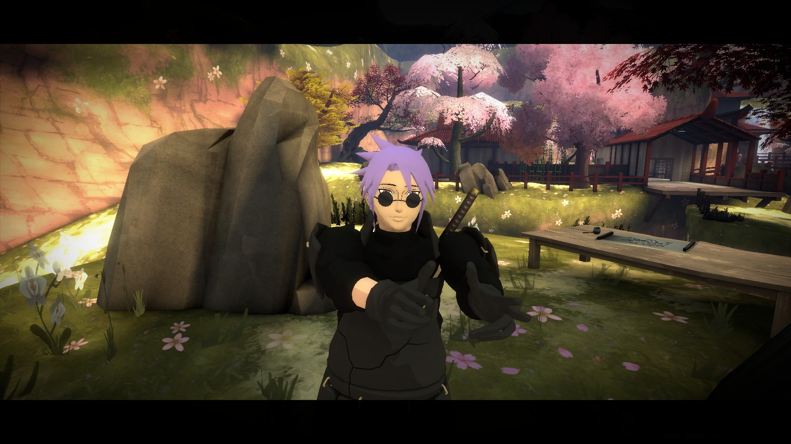
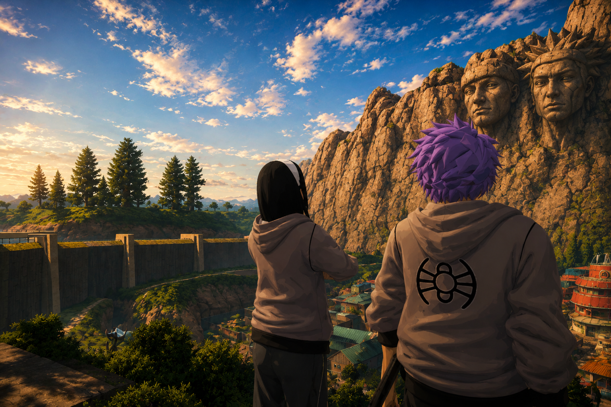
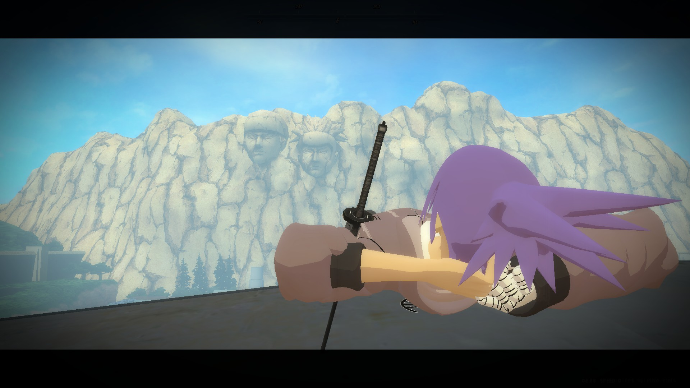
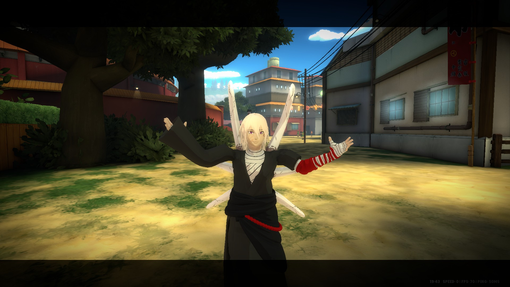
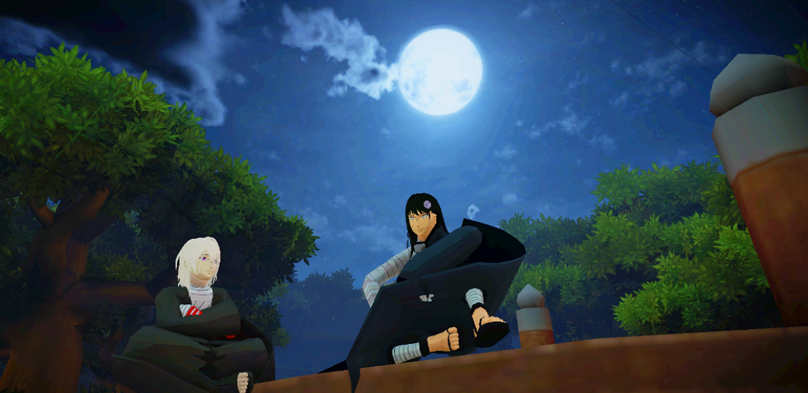
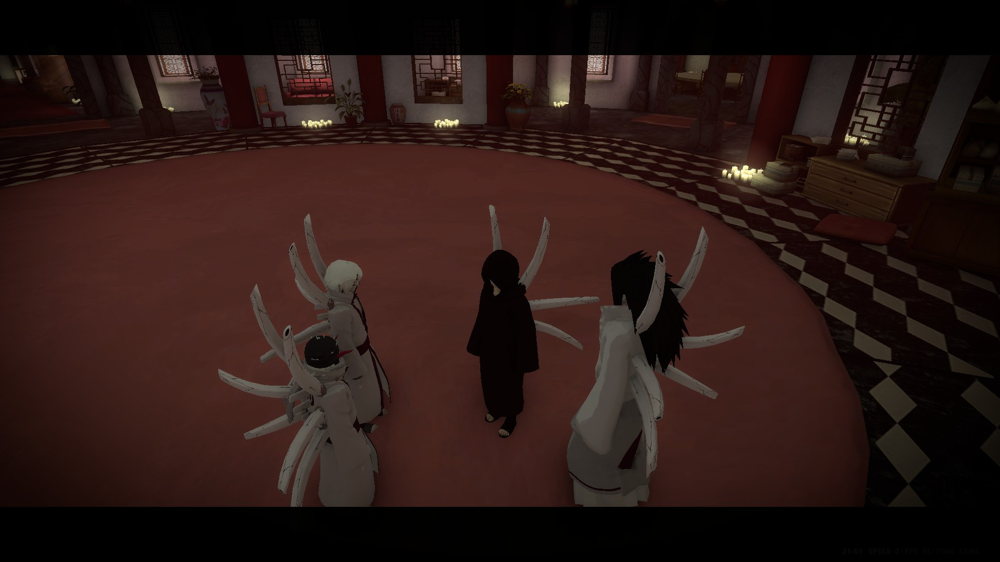

01
Yaeru 'Aburame' Minazuki
Entre héritage brisé et vengeance silencieuse, Yaeru a gravé son histoire dans les secrets du clan Aburame.
Trois personnages passés, des expériences concrètes et une direction artistique complète pour un héritier qui veut enfin écrire son propre nom.
Trois parcours, trois univers et une même ligne directrice : provoquer des scènes, transmettre, enquêter et faire évoluer les histoires des autres joueurs.
Entre héritage brisé et vengeance silencieuse, Yaeru a gravé son histoire dans les secrets du clan Aburame.
À la recherche de ses origines, Azren a transformé l’exil en passerelle entre les clans, les alliances et les destins.
Entre les murmures de l’hôpital et les illusions du Genjutsu, Kyota a fait de chaque rencontre le début d’une nouvelle histoire.
Jengetsu ne veut pas effacer son père. Il veut comprendre ce qu’il a bâti, puis décider de ce qui mérite de lui survivre.
Jengetsu grandit entouré de privilèges, de richesses et d’attentions. Contrairement à son père, il ne manque de rien. Seigetsu est présent, impliqué dans son éducation et lui transmet l’ensemble des valeurs de la famille Hōzuki.
Pourtant, cette enfance idéale devient progressivement une prison. Partout où il se rend, Jengetsu est comparé à son père. Chaque réussite est attribuée à son sang. Chaque erreur est jugée plus sévèrement parce qu’il est un Hōzuki. Aux yeux du monde, il n’est pas Jengetsu : il est simplement le fils de Seigetsu.
Cette situation fait naître une profonde frustration. Là où son père cherchait à obtenir l’amour qu’on lui refusait, Jengetsu cherche sa propre identité. Il devient ambitieux, réfléchi et particulièrement compétitif. Toute sa vie devient une lutte silencieuse contre l’héritage de Seigetsu.
En observant les nobles, les chefs de clan et les dirigeants du monde shinobi, Jengetsu constate que chacun tente de laisser quelque chose derrière lui : une famille, un clan, une idéologie ou une légende.
Pour lui, la véritable immortalité ne réside pas dans les techniques ou le pouvoir, mais dans l’héritage qu’un individu transmet aux générations suivantes. Il cherche donc à bâtir un monde où les grandes familles et les grands clans remplacent peu à peu les individus dans l’histoire.
Les hommes meurent. Les lignées demeurent. À ses yeux, la stabilité du monde dépend des héritiers capables de porter le poids de leurs ancêtres.
Jengetsu éprouve une immense fierté envers son clan, mais nourrit également une certaine rancœur. Il a parfois l’impression que les autres Hōzuki voient davantage en lui l’héritier de Seigetsu que Jengetsu lui-même. Il cherche constamment à se distinguer de ses cousins et des autres membres du clan afin de construire sa propre réputation, sans devenir une simple continuation de l’histoire écrite par son père.
Jengetsu admire son père plus que n’importe qui. Il a grandi en écoutant les récits de ses exploits et en observant le respect qu’il inspire. Mais cette admiration est accompagnée d’une jalousie qu’il ne parvient jamais totalement à faire disparaître. Peu importe ses efforts ou ses victoires, elles paraissent toujours appartenir à un autre. Dans ses moments les plus sombres, il se demande si le monde aurait davantage remarqué son existence s’il était né dans une famille ordinaire.
Jengetsu apprécie sincèrement Kirigakure. Il considère le village comme l’œuvre de plusieurs générations d’Hōzuki. Là où son père voyait parfois un rival lui ayant volé son père, Jengetsu voit une responsabilité. Protéger Kirigakure revient à protéger une partie de l’histoire de sa famille. Il possède toutefois une vision élitiste du pouvoir : les personnes occupant des postes importants doivent être exemplaires et transmettre leur savoir.
Jengetsu maîtrise le Genjutsu par respect pour son héritage familial, sans partager totalement la fascination de son père pour les illusions. Il préfère utiliser cet art pour influencer les perceptions, révéler les vérités cachées ou tester la valeur d’un individu.
Pour lui, les illusions sont des instruments. Jamais une destination.
Ambitieux : chaque objectif atteint devient une nouvelle étape.
Charismatique : il attire l’attention et inspire naturellement.
Cultivé : il connaît l’histoire, la diplomatie et les traditions shinobi.
Visionnaire : ses décisions s’inscrivent dans une stratégie de long terme.
Complexe d’infériorité : il souffre de la comparaison avec son père.
Orgueilleux : il supporte difficilement qu’on minimise ses accomplissements.
Besoin de reconnaissance : il veut être reconnu pour lui-même.
Obsession héritée : il pense parfois les relations en termes de descendance et de transmission, au détriment de liens plus simples.
Découvrir l’œuvre de Seigetsu. Comprendre ce qu’il souhaite conserver ou dépasser, se faire un nom, découvrir le monde et trouver des alliés qui le suivent pour lui-même.
Créer son propre cercle. Rassembler de jeunes héritiers, développer l’influence Hōzuki sans dominer les autres et préparer la génération suivante.
Le Cercle des Héritiers. Réunir les futurs dirigeants, dépasser Seigetsu en bâtissant quelque chose de plus durable et devenir un nom à part entière.
Les hommes meurent.La conviction qui guidera Jengetsu
Les lignées demeurent.
Les expériences, les preuves de création de jeu et la trajectoire complète de Jengetsu, réunies au même endroit.

Yaeru — un instant au cœur de Konoha.
Yaeru et Kiya — une relation au cœur de son intrigue.
Yaeru — un shinobi forgé par les conflits.Yaeru était issu d’un métissage entre les familles Aburame et Minazuki. Son parcours reposait sur sa volonté de trouver sa place entre ses deux familles. À Konoha, il était responsable des bas-gradés et organisait des entraînements, des tournois et différentes activités afin de maintenir une animation régulière au village.
Il était également gérant du BDM, où il proposait des missions plus variées afin d’éviter les scénarios répétitifs et de permettre à plusieurs joueurs d’avoir un rôle important. Son évolution en Genjutsu lui a permis de créer des cours et des entraînements présentant différentes utilisations de cet art. J’ai également réservé des builds à plusieurs reprises afin d’offrir des scènes qualitatives et diversifiées.
Une grande partie de son histoire s’est construite autour des Aburame. Kiya, qu’il considérait comme sa sœur jumelle, a rompu une règle imposée aux clans par Kashimo Hyūga lors d’une réunion à laquelle le clan Uchiha n’était pas convié. Cela a conduit à sa mort au Jardin Aburame. Yaeru a voulu la venger avant de comprendre que le clan voulait également le tuer. Ces événements l’ont finalement conduit à déserter Konoha. Sous l’identité de Yuno, il a continué à développer son personnage à travers le Genjutsu, les relations inter-villages et différentes factions.
Yaeru cherchait à créer du jeu plutôt qu’à le consommer : entraînements, tournois, missions diversifiées, cours de Genjutsu et intrigues durables avec les Aburame. Cette histoire a même eu des conséquences sur le clan, qui ne possède désormais plus de maître d’arme attitré afin qu’un maître ne soit pas automatiquement entraîné dans les fautes de son Aburame respectif.

Azren — un Kaguya différent des autres.
Un enseignement éclairé par la lune et les valeurs de Kiyomi.
Azren — au milieu de son clan et de son héritage.Membre d’une escouade nukenin, expert en Genjutsu et en Bukijutsu, détenteur d’un contrat d’affiliation avec Konoha et maître complet du pouvoir Kaguya.
Azren a refusé de rester enfermé dans son escouade. Sa relation avec Keirama Senju a évolué jusqu’à l’hébergement de l’escouade au domaine Senju, puis à la création d’un contrat avec Konoha. Kiyomi Hyūga l’a également pris comme disciple, ce qui a créé un jeu régulier autour de l’apprentissage, de la transmission et de son évolution personnelle.
Le clan Kaguya représentait une autre partie importante de son histoire : Azren cherchait à comprendre ses origines, à découvrir les traditions du clan et à se rapprocher de ses membres. Il a aussi participé à de nombreuses missions, négociations et opérations, avant de transmettre à Konoha la localisation de la base des Forces spéciales de Kiri.
Avec Azren, l’objectif était de créer des liens avec des joueurs extérieurs à son groupe : hébergement au domaine Senju, contrat avec Konoha, relation de disciple avec Kiyomi Hyūga et recherche d’identité au sein du clan Kaguya. Le personnage évoluait à travers les autres, jamais seul.
Kyota apportait du RP grâce à ses deux domaines principaux : la médecine et le Genjutsu. À l’hôpital de Suna, il était médecin, s’occupait de la psychologie des patients, accompagnait les plus jeunes et les formait.
Au sein de la Koan, il organisait des missions et des enquêtes impliquant plusieurs joueurs et permettant de créer du lose RP. Au BDM, il contribuait à la création de missions inter-villages. Enfin, il avait manipulé certains membres du culte du serpent, obtenant des informations sur le culte de Tensen et ouvrant une nouvelle piste de jeu.
Son histoire ne se joue pas en solitaire : elle s’appuie sur les clans, les héritiers, les rivalités et les alliances.
Ambitieux, charismatique, cultivé et visionnaire. Jengetsu pense au-delà de la scène immédiate et cherche les conséquences qui feront grandir le RP.
Un complexe d’infériorité, de l’orgueil et un besoin de reconnaissance. Son obsession de l’héritage peut aussi l’empêcher de voir les liens les plus simples.
Court terme : découvrir l’œuvre de Seigetsu, se faire un nom, découvrir le monde et trouver ses propres alliés.
Moyen terme : créer son propre cercle, développer l’influence Hōzuki et préparer la génération suivante.
Long terme : créer le Cercle des Héritiers, dépasser Seigetsu en bâtissant quelque chose de plus durable et devenir un nom à part entière.